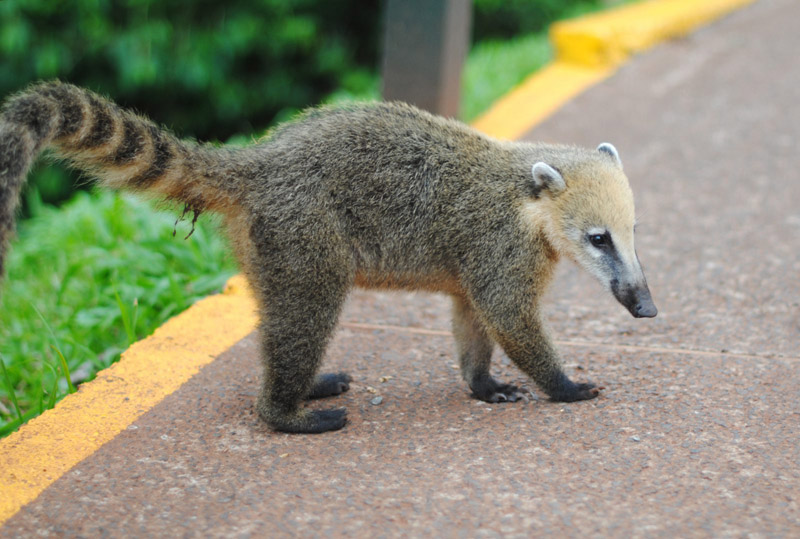
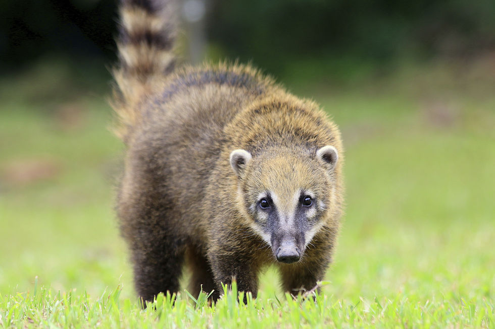
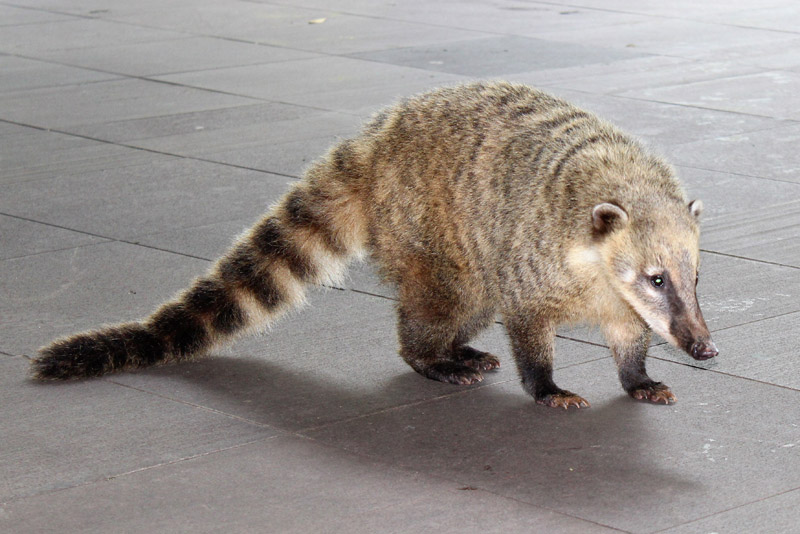
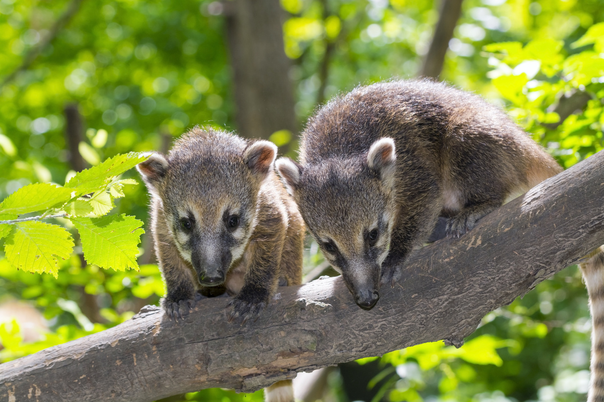
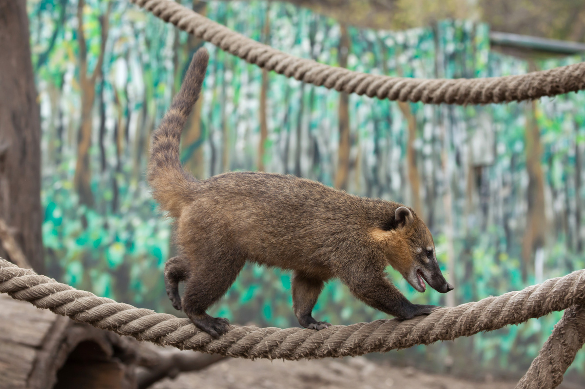
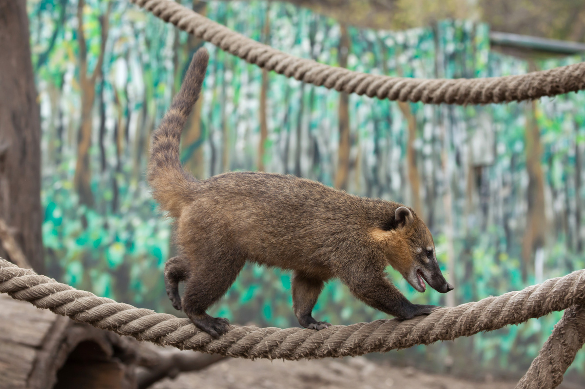
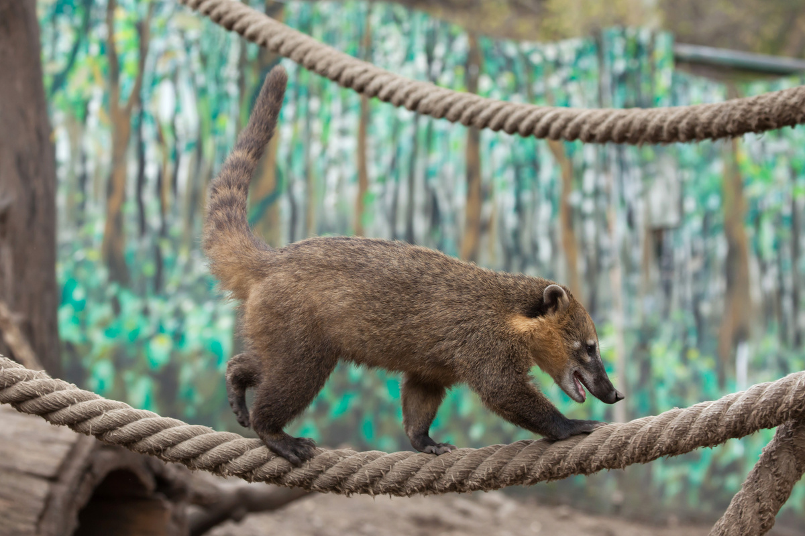

Quati




 


INFORMAÇÕES SOBRE O ANIMAL
- Nome Científico: Nasua nasua
(Linnaeus, 1766) - Nomes Populares: Conhecido também como "quati" ou "quati-de-cabeça-branca"
Classificação Biológica
- Domínio: Eukaryota
- Reino: Animalia
- Filo: Chordata
- Classe: Mammalia
- Ordem: Carnivora
- Família: Procyonidae
- Gênero: Nasua
- Espécie: N. nasua
Nutrição Geral e Hábitos Alimentares
- Tipo de Nutrição: Omnívoro
- O quati tem uma dieta variada que inclui frutas, insetos, pequenos vertebrados, folhas e sementes. Eles são conhecidos por usar suas garras para cavar e procurar alimento no solo, além de serem muito hábeis em forragear em busca de comida.
Morfologia
- Pelagem e Corpo
O quati possui uma pelagem densa e geralmente marrom-avermelhada com uma cauda longa e espessa, que pode ser utilizada para equilíbrio. Seu corpo é esguio e bem adaptado para escalar e buscar alimento.
Órgãos Respiratórios
O sistema respiratório do quati é típico de um mamífero, incluindo narinas, fossas nasais, cavidade nasal, faringe, laringe, traqueia e pulmões.
Patas
As patas do quati são fortes e adaptadas para escalar e cavar, com garras afiadas que utilizam para procurar alimento e escalar árvores. Comportamento
- O quati é um animal social e costuma viver em grupos que podem variar de pequenas famílias a grandes bandos. Eles são ativos durante o dia e passam grande parte do tempo forrageando e explorando seu habitat. São conhecidos por serem muito curiosos e inteligentes, além de ter um comportamento territorial.
Ocorrência
- O quati é encontrado em diversas áreas da América do Sul, incluindo Brasil, Argentina, Paraguai e Bolívia. Habita principalmente florestas tropicais, áreas de mata atlântica e regiões de cerrado, geralmente em habitats com vegetação densa e áreas de cobertura arbórea.
- Mapa de Ocorrência
Reprodução
- Sistema de Acasalamento: O quati é geralmente monogâmico e forma pares ou grupos familiares duradouros.
Reprodução ao Longo do Ano: A reprodução pode ocorrer durante o ano inteiro, com picos em certas épocas.
Gestação: A gestação dura cerca de 77 a 84 dias.
Ninhadas: As fêmeas geralmente dão à luz de 1 a 7 filhotes por ninhada. Os filhotes nascem cegos e dependem da mãe para cuidados e alimentação até se desenvolverem.